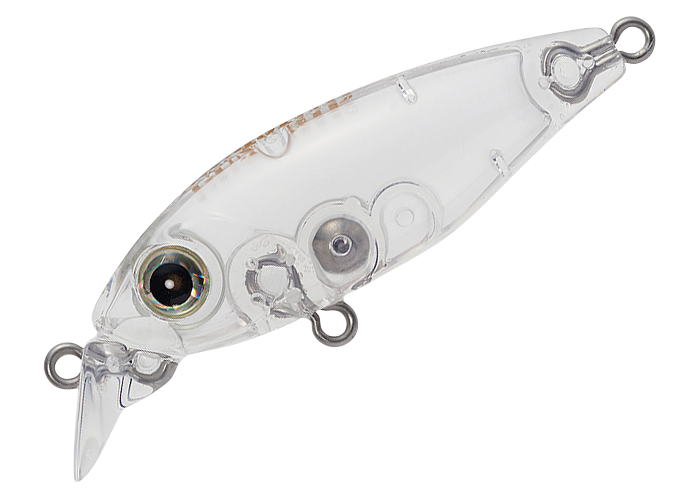
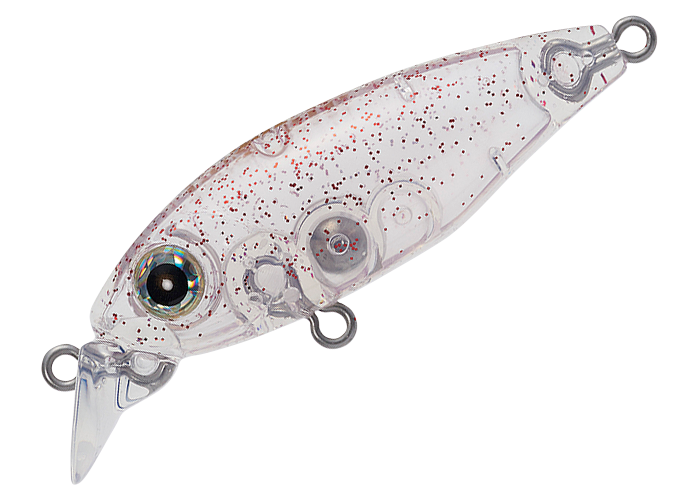
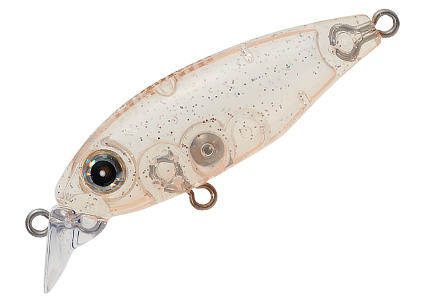
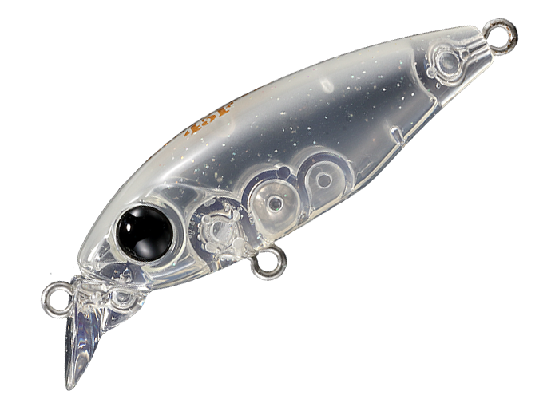

ガンシップ45F
（GUNSHIP 45F）
「ガンシップ」は、メバルをメインターゲットにしたソルトウォーターのライトゲーム用小型ミノーです。スタンダードサイズのガンシップ36でも届かない所を攻めたい、という声に応えて生まれたのがガンシップ45です。
ガンシップ45Fは、そのフローティングモデルです。45mmなのに引き心地は軽く、タングステン内蔵で圧倒的な飛距離を出せるのが最大の特徴です。

画像出典:スミス公式HP
スペック
- メーカー
- SMITH（スミス）
- タイプ
- フローティング（表層系ミノー）
- 全長
- 45mm
- 重さ
- 4.0g
- フック
- シングルフック#12
- カラー
- 全17色
- ターゲット
- メバル
- 価格
- 1,400円（税別）
▼今すぐチェック

ガンシップ45Fの特徴
攻略範囲を拡げるサイズアップモデル
-
子イカをイメージしたボディ
ちょっとファットなボディに、ゲソの部分をまとめたオフセットリップと大きな目玉。全体がリアルなベイトに見えるフォルム。
-
タングステンで抜群の飛距離
内蔵ウエイトに高比重のタングステンを使い、同じサイズでも抜群の飛距離を出す。固定ウエイト・低重心で、超スローからハイスピードまで動きが破綻しにくい。
-
動きがはっきり伝わる
引き心地は軽いのに、「カン、カン、カン」とボディを振っているのが手元に伝わる。見えないナイトゲームでも、変化を逃さず感じ取れる。
ガンシップ45Fの使い方
基本は、キャストしたら、ドリフト（漂わせる）やスローなリトリーブで水面直下を引くことです。巻いている途中でストップ＆ポーズを入れて浮き上がらせるのも、とても効果的です。
巻いている時の波動とフラッシングで存在感を出し、止めて食わせの間を作るイメージで使いましょう。
ガンシップ45Fの得意な状況
風波が弱く、メバルが水面付近で活発に食っている時に出番です。
ガンシップ36では届かなかった沖のメバルまで届けて、表層で食わせられるのが強み。水面付近にメバルが浮いている夜によく釣れるミノーです。
ワンポイント
表層で食わない時は、2〜3回巻いて止め、浮き上がってくる間を長めにとると、浮上するガンシップにメバルが下から食い上げてきます。
ガンシップ45F・45SS・45HFの使い分け
| モデル | 重さ | タイプ | こんな |
|---|---|---|---|
| ガンシップ45F | 4.0g | フローティング | 風波が |
| ガンシップ45SS | 4.3g | スローシンキング | 風波が |
| ガンシップ45HF | 3.5g | ハイフローティング | 高活性の |
スペックはスミス公式HPの記載より。どのモデルも全長45mm・シングルフック#12・1,400円（税別）。
人気カラー
ガンシップ45Fの人気カラーを紹介します。

クリアークリアーにこだわったガンシップの定番。

レッドグリッター赤ラメで、常夜灯まわりに。

ナトリウムネオンオレンジ系の常夜灯の下に。

ダブルグロー暗い場所で目立たせたい時に。
※全17色（45F・45SS共通）。
画像出典:スミス公式HP
▼今すぐチェック
ガンシップ45Fに似ているルアー
-
 ガンシップ45SS
スミス
詳細はこちら＞
ガンシップ45SS
スミス
詳細はこちら＞
同じガンシップ45のスローシンキング。
-
 リッジ35SS
ジップベイツ
詳細はこちら＞
リッジ35SS
ジップベイツ
詳細はこちら＞
メバル用のマイクロミノー。
-
 ラプター50SS
レガーレ
詳細はこちら＞
ラプター50SS
レガーレ
詳細はこちら＞
ライトゲーム用の小型ミノー。